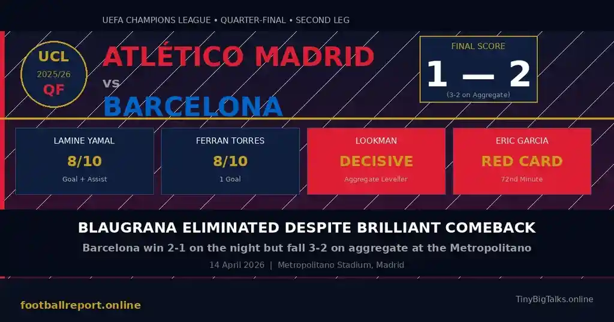

Rory McIlroy Wins Masters 2026: Back-to-Back Green Jacket & $4.5M Prize
McIlroy secures his sixth major title and second consecutive Masters victory at Augusta National, beating Scottie Scheffler by a single stroke.
[Read more]
Barcelona produced one of the most electrifying first-half performances in recent Champions League memory at the Metropolitano on April 14, 2026 — but it still wasn't enough. The Blaugrana fought back from a 2-0 aggregate deficit to level the tie, only to be undone by Ademola Lookman's clinical counter and a fatal red card for Eric Garcia, crashing out of the UEFA Champions League 2026 quarter-finals 3-2 on aggregate.
The Barcelona vs Atletico Madrid Champions League 2026 second leg will be remembered for its extraordinary swings of momentum — a vintage Lamine Yamal performance, a well-taken Ferran Torres goal, a controversial VAR-assisted red card, and ultimately, the brutal reality of European football: individual errors at the highest level come with the heaviest price.
If you tuned in late to this Champions League quarter-final 2026 second leg, you would have been forgiven for thinking the tie was already over — but for all the wrong reasons for Atletico. Hansi Flick's Barcelona arrived at the Metropolitano needing to overturn a two-goal first-leg deficit, and they set about doing exactly that from the very first second.
⭐🔥 Recommended: Gift link
Lamine Yamal, rated 8/10 by major football analysts, was the catalyst from the opening whistle. The teenage sensation forced Juan Musso into a save within 30 seconds and then, capitalising on a catastrophic Clement Lenglet error, rolled the ball between the goalkeeper's legs in just the fourth minute. The Metropolitano fell silent. The Barcelona UCL comeback was alive.
Dani Olmo nearly doubled the lead moments later, spurning a one-on-one chance that would have sent Barcelona into a commanding position. Antoine Griezmann had a golden opportunity to steady Atletico nerves at the other end, but Gerard Martin produced a brilliant last-ditch block to deny the Frenchman. The defending was as dramatic as the attacking.
Then came the moment that made the Metropolitano truly nervous. Ferran Torres, chosen ahead of Robert Lewandowski in Flick's bold selection call, was played in by a beautifully weighted Dani Olmo pass and finished with aplomb to make it 2-0 on the night — levelling the tie at 2-2 on aggregate in just the 24th minute. The Ferran Torres Champions League goal was as significant as it was composed, and instantly justified his selection as one of the big talking points heading into the match.
Just as Barcelona were threatening to complete one of European football's great comebacks, Diego Simeone's side demonstrated exactly why they remain one of the continent's most feared teams. A blistering counter-attack — direct, precise and devastatingly clinical — ended with Ademola Lookman converting a pinpoint cross to restore Atletico's aggregate lead in the 30th minute.
⭐🔥 Recommended: Gift link
The goal was vintage Atletico Madrid under Simeone: absorb pressure, wait for the transition, execute ruthlessly. For all of Barcelona's technical brilliance in those opening 25 minutes, Atletico showed that the Champions League 2026 rewards the coldly efficient as much as the technically gifted. The aggregate score now stood at 3-2 to the home side, and Barcelona would need yet another goal without conceding.
Torres had one more effort smothered in the breathless final moments of a first half that could comfortably have lasted two hours and still have had more drama to offer.
The interval brought a reset, and not in Barcelona's favour. Atletico Madrid, who had looked rattled for extended spells in the opening 45 minutes, emerged as a far more composed and structured unit after the break. The Blaugrana, so electric in the first half, simply could not maintain that extraordinary intensity level.
Lookman fired just wide of Joan Garcia's post in one dangerous raid, and Robin Le Normand went close not once but twice in quick succession — the Atletico centre-back's aerial threat causing repeated problems. Garcia, the Barcelona goalkeeper, made a sublime late save from Le Normand's header to keep his side's hopes alive, but the tide had well and truly turned in Atletico's direction.
A Torres strike was disallowed for offside, cutting off one of the few moments where Barcelona threatened to find the decisive equaliser. Then, with ten minutes remaining, came the moment that killed the tie entirely.
Substitute Alexander Sorloth broke beyond the Barcelona backline, and Eric Garcia — who had battled gamely throughout the match — tripped the Norwegian striker in a last-man situation. The referee initially waved play on after a flag for offside, but VAR intervened, determined the offside call was incorrect, and Garcia was shown a straight red card.
The Eric Garcia red card VAR decision proved to be the pivotal moment of the entire tie. Down to ten men, Barcelona's already-fading chances of scoring the goal they needed were reduced to almost nothing. Hansi Flick threw Ronald Araujo forward for the game's dying moments in a desperate bid to find an equaliser from set pieces.
The moment came — a corner deep in added time, the ball dropping perfectly for Araujo six yards from goal — and the Uruguayan headed wide. It was a finish that summed up Barcelona's night: so much effort, so much quality from the starting eleven, ultimately undone by individual moments at the cruellest time.
⭐🔥 Recommended: Gift link
The full-time whistle confirmed Atletico Madrid's progression to the UEFA Champions League 2026 semi-finals, eliminating Barcelona 3-2 on aggregate in a match that will live long in the memory of both sets of supporters.
For Atletico Madrid, progression to the UEFA Champions League 2026 semi-finals represents a significant achievement under Simeone, whose side showed incredible resilience in this two-legged tie. Having conceded the first-leg initiative through Barcelona's first-half brilliance in the second leg, their ability to absorb and punish on the counter-attack demonstrated everything that makes this Atletico side so dangerous in knockout football.
For Barcelona, the exit will sting. Hansi Flick has built a vibrant, attacking side at Camp Nou — a team capable of those extraordinary first-half 25 minutes against one of Europe's best-organised defences. But European glory requires doing it for 90 minutes over two legs, and individual moments — Lenglet's errors in the first leg, Garcia's red card in the second — proved the decisive factors. The Lamine Yamal Champions League performances this season have been exceptional; at just 17, his development trajectory remains one of world football's most exciting storylines.
The Blaugrana will now refocus their energies on La Liga 2026, where they face Celta Vigo on April 22 with domestic ambitions still very much intact. For Flick's side, the continental dream ends here, but the foundations for future Champions League challenges look stronger than ever.
Barcelona produced enough quality in their first-half showing to suggest they belong among Europe's elite — but Atletico Madrid's counter-attacking ruthlessness and the Blaugrana's second-half collapse were ultimately the defining factors. A 3-2 aggregate defeat is desperately hard on Flick's side given what might have been, but Atletico deserve credit for their clinical efficiency. Lamine Yamal and Ferran Torres were exceptional, yet the tie was decided not by quality but by the margins that define knockout European football.
⭐🔥 Recommended: Gift link
What's next? Atletico Madrid enter the UCL 2026 semi-final draw as one of four remaining sides. Barcelona resume La Liga action on April 22 against Celta Vigo at Camp Nou. For the latest football updates, Champions League 2026 results, and live match analysis, bookmark footballreport.online — your destination for comprehensive football coverage.

McIlroy secures his sixth major title and second consecutive Masters victory at Augusta National, beating Scottie Scheffler by a single stroke.
[Read more]
A massive fire at the Viva Energy oil refinery in Geelong was extinguished after 12 hours. Discover the cause and the potential impact on Australian petrol prices amid a global fuel crunch.
[Read more]
Everything you need to know about the Euphoria Season 3 release date, episode schedule, and how to stream Zendaya's return on HBO Max in 2026.
[Read more]
In a historic shift, Peter Magyar's Tisza Party wins the 2026 Hungarian elections, ending Viktor Orbán's 16-year era.
[Read more]
Discover the features of Poland's e-Urząd Skarbowy mobile app. With the tax office now on their smartphones, Poles can file taxes, receive letters, and pay securely via BLIK 24/7.
[Read more]